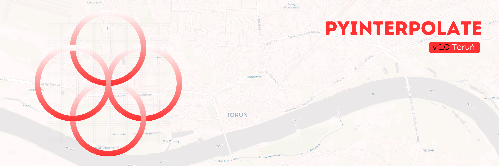

Pyinterpolate#
{kind=link}
version 1.1.0#
Note
The last documentation update: 2025-09-19
Important notice#
The package was updated to version 1.0 in June 2025. There are breaking API changes, so please, refer to the changelog, to know more about the changes. Right now, the package in version 1.0.0 is in the beta stage, which means that it is stable but be careful with the production use. There might be some minor bugs, and large swaths of code are not optimized yet. If you find any bugs, please report them in the Github issue tracker.
Introduction#
Pyinterpolate is the Python library for spatial statistics. The package provides access to spatial statistics tools (variogram analysis, Kriging, Poisson Kriging, Indicator Kriging, Inverse Distance Weighting).
If you’re:
GIS expert
Geologist
Social scientist
Then this package may be useful for you. You could use it for:
spatial interpolation and spatial prediction
alone or with machine learning libraries
for point observations interpolation
and aggregated data disaggregation
You can run:
Ordinary Kriging and Simple Kriging - spatial interpolation from points
Centroid-based Poisson Kriging of polygons - spatial interpolation from blocks and regions
Area-to-area and Area-to-point Poisson Kriging of Polygons - spatial interpolation and data deconvolution from areas to points
Indicator Kriging - kriging based on probabilities
Universal Kriging - kriging with trend
Inverse Distance Weighting - benchmarking spatial interpolation technique
Semivariogram regularization and deconvolution - transforming variogram of areal data in regards to point support data
Semivariogram modeling and analysis - is your data spatially correlated? How do neighbors influence each other?
With Pyinterpolate you can transform data aggregated on a county-level to better resolution.
The example is COVID-19 population at risk mapping. Countries worldwide aggregate disease data to protect the privacy of infected people. But this kind of representation introduces bias to the decision-making process. To overcome this bias, you may use Poisson Kriging. Block aggregates of COVID-19 infection rate are transformed into the point support created from population density blocks. We get the population at risk map:
{kind=link}
Contents#
Citation#
Moliński, S., (2022). Pyinterpolate: Spatial interpolation in Python for point measurements and aggregated datasets. Journal of Open Source Software, 7(70), 2869, https://doi.org/10.21105/joss.02869